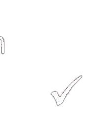

Wǒ de shǒujīhào shì男： 我的手机号是+86 13552721160。Wǒ nǐ de shǒujīhào, nǐ de diànhuàhào ne?女： 我 ( ) 你的手机号， 你的电话号呢？
Male: My mobile number is +86 13552721160.
Female: I ( ) your mobile number, what's your phone number?Муж: Мой номер мобильного +86 13552721160.
Жен: Я ( ) твой номер мобильного, твой номер телефона?第四部分Part IVЧасть IV
第19—20题： 选择正确答案。Questions 19-20: Choose the correct answer for each question.Вопросы 19-20: Выберите правильный ответ на каждый вопрос.
Qǐngwèn xiànzài jǐ diǎn le?例如： 请问 现在 几 点 了？★说话人 想 知道 什么？shíjiānA 时间míngziB 名字fángjiānhàoC 房间号
Example: Excuse me, what time is it now?
What does the speaker want to know?
A time
B name
C room numberПример: Простите, который сейчас час?
Что хочет знать говорящий?
A время
B имя
C номер комнаты我 家 有 三 口 人：爸爸、妈妈 和 我。★说话人 家 里 有 几 口 人？sān kǒu rénA 三 口 人sì kǒu rénB 四 口 人liù kǒu rénC 六 口 人
明天 星期天， 我 休息， 想 去 超市 买 牛奶。★说话人 想 买 什么？càiA 菜niúnǎiB 牛奶jiǎoziC 饺子